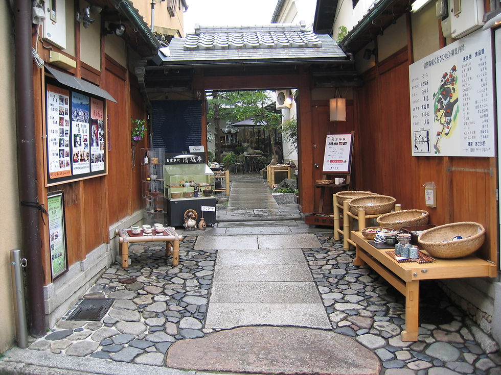
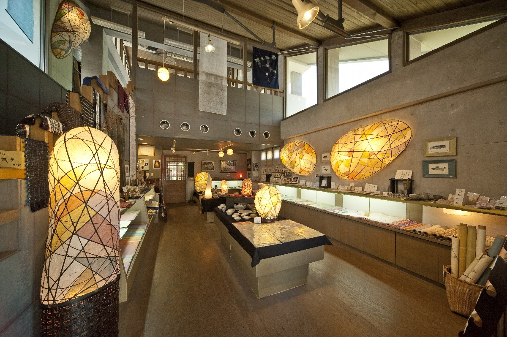
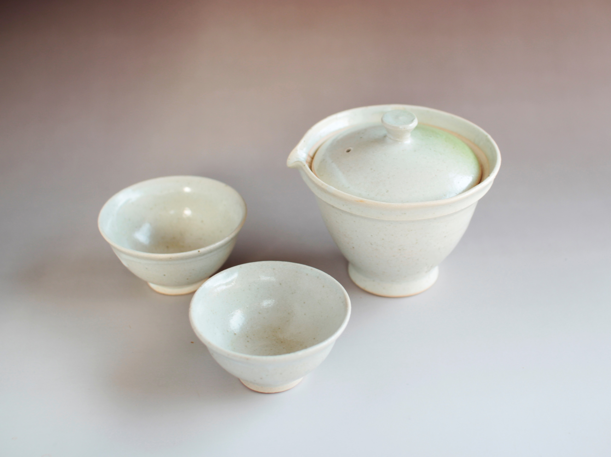

Lanterna Japonesa
Peça decorativa artesanal inspirada nas tradicionais lanternas japonesas.
R$ 69,90unidade
A Takumi Japão reúne peças artesanais inspiradas na tradição japonesa, combinando madeira, papel, cerâmica, tecido e elementos decorativos em uma coleção de estilo sóbrio e contemporâneo.

Uma história fictícia criada para apresentar o projeto da loja de forma profissional.

A Takumi Japão nasceu em 2022, em São Paulo, a partir de um pequeno grupo interessado em técnicas artesanais japonesas. O projeto começou com encontros para produzir origamis, pequenas peças de madeira, lanternas decorativas e objetos inspirados em padrões tradicionais.
Com o aumento das encomendas, o grupo organizou um catálogo próprio e passou a desenvolver coleções que unem referências do Japão com um acabamento moderno. Em 2024, o projeto ganhou o nome Takumi Japão, inspirado na ideia japonesa de habilidade artesanal e domínio de uma técnica.
Hoje, a proposta da loja é valorizar o trabalho manual, contar histórias por meio dos objetos e aproximar o público da estética japonesa através de peças acessíveis e personalizáveis.
Arquitetura, lojas tradicionais e o cuidado com os materiais fazem parte da identidade visual do projeto.


Imagens de referência usadas apenas para fins de apresentação visual do projeto.
Valores ilustrativos para a apresentação do projeto.
Peça decorativa artesanal inspirada nas tradicionais lanternas japonesas.
Conjunto com papéis estampados e peças artesanais para decoração.
Conjunto decorativo de inspiração japonesa com acabamento minimalista.
Enfeite inspirado nos tradicionais sinos de vento usados no verão japonês.
Caixa decorativa inspirada na marchetaria geométrica tradicional japonesa.
Arte decorativa inspirada nas ondas e na estética clássica do Japão.
Leque artesanal para decoração, produzido com papel e estrutura leve.
Kit personalizado com seleção de pequenos produtos e embalagem temática.
Criação de peças decorativas feitas manualmente e em pequenas quantidades.
Personalização de cores, estampas, embalagens e conjuntos para presentes.
Atividades de origami e artesanato para eventos, escolas e apresentações culturais.
“A embalagem e o acabamento ficaram muito bons. O produto tem uma apresentação elegante e diferente.”
— Rafael Martins“Comprei um kit para presente e gostei bastante da proposta inspirada na cultura japonesa.”
— Bruno Oliveira“As peças decorativas deixaram meu espaço mais bonito sem exagero. Visual simples e bem feito.”
— Lucas AlmeidaA loja foi criada por seis fundadores que reuniram ideias de artesanato, cultura japonesa, organização e apresentação para desenvolver a identidade da Takumi Japão.
Fundador
Fundador
Fundadora
Fundadora
Fundadora
Fundadora
Consultora responsável pela apresentação e organização da Takumi Japão. A proposta é unir uma identidade visual moderna ao respeito pelas referências culturais e artesanais japonesas.
Solicite informações, valores de encomendas ou detalhes sobre oficinas.
Informações fictícias utilizadas para o projeto acadêmico.